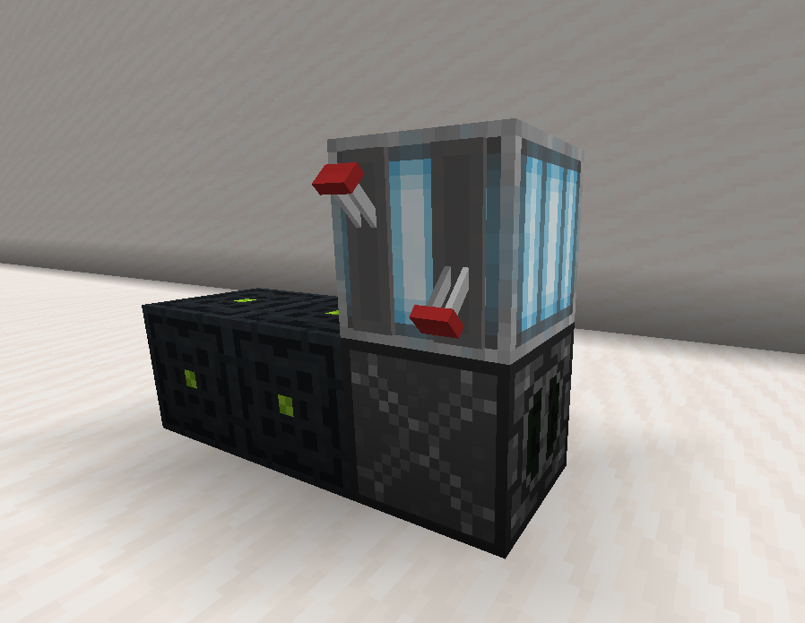

In order to use resonant, you have to generate it first. This page details the different machines used to
create and store resonant crystals
To create resonant crystals you will need a generator and something to store it in, generators create
'pulses' that charge batteries or capacitors at a fixed rate. Connect the output of a generator to the input
of a battery/capacitor with resonant cables and it will gain a set amount of resonant per pulse. Each machine has how many pulses
that it can generate listed.
Storage
While you can store resonant crystals in normal chests/barrels like you would ordinary items, you have to
use special storage devices in order to power crafts and collect the crystals.
Battery
Batteries are the more efficient, but more expensive way to store resonant, the dropper is used as the
input and storage.
Required blocks
Composite blocks (custom)
2
Dropper
1
Capacity
9 Stacks
Resonant per pulse
2
Capacitor
Capacitors are a cheaper but less efficient storage method, the dropper is used as the input and the barrel is the storage.
Required blocks
Barrel
1
Dropper
1
Iron block
1
Capacity
27 Stacks
Resonant per pulse
4
Generators
Generators are how you actually generate resonant crystals. (go figure) Connect a generator to a storage device, activate it, and you should start producing resonant.
Combustion generator

Combustion generators get their power from burning fuel, lower 'tiers' of fuel have a higher chance to be consumed, The back of the blast furnace is the output.
Fuel type
Chance to be consumed
Coal / Charcoal
1/9
Blaze powder / Magma cream
1/24
Coal block / Oxygen canister
1/90
Enriched Uranium Fuelrods
2.5/100 (Also produces extra power)
Required blocks
Redstone lamp (activation)
1
Blast furnace (input/output)
1
Pulse frequency
Every 10 seconds
Solar generator
Once built and activated solar generators require no maintenance and will generate pulses on their own, the only downsides are that they must have sky above them and they must be above y63.